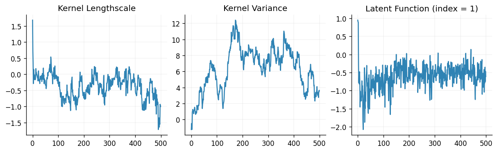
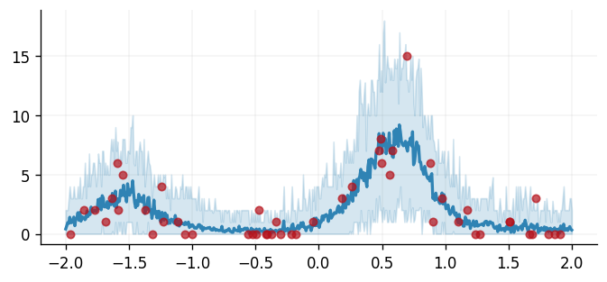

Count data regression
In this notebook we demonstrate how to perform inference for Gaussian process models with non-Gaussian likelihoods via Markov chain Monte Carlo (MCMC). We focus on a count data regression task here and use BlackJax for sampling.
import blackjax
from flax import nnx
import jax
from jax import config
import jax.numpy as jnp
import jax.random as jr
import jax.tree_util as jtu
from jaxtyping import install_import_hook
import matplotlib as mpl
import matplotlib.pyplot as plt
from examples.utils import use_mpl_style
with install_import_hook("gpjax", "beartype.beartype"):
import gpjax as gpx
from gpjax.parameters import Parameter
# Enable Float64 for more stable matrix inversions.
config.update("jax_enable_x64", True)
# set the default style for plotting
use_mpl_style()
cols = mpl.rcParams["axes.prop_cycle"].by_key()["color"]
key = jr.key(42)
Dataset
For count data regression, the Poisson distribution is a natural choice for the likelihood function. The probability mass function of the Poisson distribution is given by
where \(y\) is the count and the parameter \(\lambda \in \mathbb{R}_{>0}\) is the rate of the Poisson distribution.
We than set \(\lambda = \exp(f)\) where \(f\) is the latent Gaussian process. The exponential function is the link function for the Poisson distribution: it maps the output of a GP to the positive real line, which is suitable for modeling count data.
We simulate a dataset \(\mathcal{D} = \{(\mathbf{X}, \mathbf{y})\}\) with inputs \(\mathbf{X} \in
\mathbb{R}^d\) and corresponding count outputs \(\mathbf{y}\). We store our data \(\mathcal{D}\) as a
GPJax Dataset.
key, subkey = jr.split(key)
n = 50
x = jr.uniform(key, shape=(n, 1), minval=-2.0, maxval=2.0)
f = lambda x: 2.0 * jnp.sin(3 * x) + 0.5 * x # latent function
y = jr.poisson(key, jnp.exp(f(x)))
D = gpx.Dataset(X=x, y=y)
xtest = jnp.linspace(-2.0, 2.0, 500).reshape(-1, 1)
fig, ax = plt.subplots()
ax.plot(x, y, "o", label="Observations", color=cols[1])
ax.plot(xtest, jnp.exp(f(xtest)), label=r"Rate $\lambda$")
ax.legend()
/home/runner/work/GPJax/GPJax/.venv/lib/python3.11/site-packages/jaxtyping/_decorator.py:473: UserWarning: y is not of type float64.Got y.dtype=int64. This may lead to numerical instability.
out = fn(*args, **kwargs)
<matplotlib.legend.Legend at 0x7f483017ecd0>
Gaussian Process definition
We begin by defining a Gaussian process prior with a radial basis function (RBF) kernel, chosen for the purpose of exposition. We adopt the Poisson likelihood available in GPJax.
kernel = gpx.kernels.RBF()
meanf = gpx.mean_functions.Constant()
prior = gpx.gps.Prior(mean_function=meanf, kernel=kernel)
likelihood = gpx.likelihoods.Poisson(num_datapoints=D.n)
We construct the posterior through the product of our prior and likelihood.
<class 'gpjax.gps.NonConjugatePosterior'>
Whilst the latent function is Gaussian, the posterior distribution is non-Gaussian since our generative model first samples the latent GP and propagates these samples through the likelihood function's inverse link function. This step prevents us from being able to analytically integrate the latent function's values out of our posterior, and we must instead adopt alternative inference techniques. Here, we show how to use MCMC methods.
MCMC inference
An MCMC sampler works by starting at an initial position and drawing a sample from a cheap-to-simulate distribution known as the proposal. The next step is to determine whether this sample could be considered a draw from the posterior. We accomplish this using an acceptance probability determined via the sampler's transition kernel which depends on the current position and the unnormalised target posterior distribution. If the new sample is more likely, we accept it; otherwise, we reject it and stay in our current position. Repeating these steps results in a Markov chain (a random sequence that depends only on the last state) whose stationary distribution (the long-run empirical distribution of the states visited) is the posterior. For a gentle introduction, see the first chapter of A Handbook of Markov Chain Monte Carlo.
MCMC through BlackJax
Rather than implementing a suite of MCMC samplers, GPJax relies on MCMC-specific libraries for sampling functionality. We focus on BlackJax in this notebook, which we recommend adopting for general applications.
We begin by generating sensible initial positions for our sampler before defining an inference loop and sampling 200 values from our Markov chain. In practice, drawing more samples will be necessary.
# Adapted from BlackJax's introduction notebook.
num_adapt = 1000
num_samples = 500
graphdef, params, *static_state = nnx.split(posterior, Parameter, ...)
params_bijection = gpx.parameters.DEFAULT_BIJECTION
# Transform the parameters to the unconstrained space
params = gpx.parameters.transform(params, params_bijection, inverse=True)
def logprob_fn(params):
params = gpx.parameters.transform(params, params_bijection)
model = nnx.merge(graphdef, params, *static_state)
return gpx.objectives.log_posterior_density(model, D)
step_size = 1e-3
n_params = sum(jnp.size(leaf) for leaf in jtu.tree_leaves(params))
inverse_mass_matrix = jnp.ones(n_params)
nuts = blackjax.nuts(logprob_fn, step_size, inverse_mass_matrix)
state = nuts.init(params)
step = jax.jit(nuts.step)
def one_step(state, rng_key):
state, info = step(rng_key, state)
return state, (state, info)
keys = jax.random.split(key, num_samples)
_, (states, infos) = jax.lax.scan(one_step, state, keys, unroll=10)
Sampler efficiency
BlackJax gives us easy access to our sampler's efficiency through metrics such as the sampler's acceptance probability (the number of times that our chain accepted a proposed sample, divided by the total number of steps run by the chain).
Acceptance rate: 1.00
fig, (ax0, ax1, ax2) = plt.subplots(ncols=3, figsize=(10, 3))
ax0.plot(states.position.prior.kernel.lengthscale.value)
ax1.plot(states.position.prior.kernel.variance.value)
ax2.plot(states.position.latent.value[:, 1, :])
ax0.set_title("Kernel Lengthscale")
ax1.set_title("Kernel Variance")
ax2.set_title("Latent Function (index = 1)")
Text(0.5, 1.0, 'Latent Function (index = 1)')

Prediction
Having obtained samples from the posterior, we draw ten instances from our model's predictive distribution per MCMC sample. Using these draws, we will be able to compute credible values and expected values under our posterior distribution.
An ideal Markov chain would have samples completely uncorrelated with their neighbours after a single lag. However, in practice, correlations often exist within our chain's sample set. A commonly used technique to try and reduce this correlation is thinning whereby we select every \(n\)-th sample where \(n\) is the minimum lag length at which we believe the samples are uncorrelated. Although further analysis of the chain's autocorrelation is required to find appropriate thinning factors, we employ a thin factor of 10 for demonstration purposes.
thin_factor = 20
posterior_samples = []
for i in range(0, num_samples, thin_factor):
sample_params = jtu.tree_map(lambda samples, i=i: samples[i], states.position)
sample_params = gpx.parameters.transform(sample_params, params_bijection)
model = nnx.merge(graphdef, sample_params, *static_state)
latent_dist = model.predict(xtest, train_data=D)
predictive_dist = model.likelihood(latent_dist)
posterior_samples.append(predictive_dist.sample(key=key, sample_shape=(10,)))
posterior_samples = jnp.vstack(posterior_samples)
lower_ci, upper_ci = jnp.percentile(posterior_samples, jnp.array([2.5, 97.5]), axis=0)
expected_val = jnp.mean(posterior_samples, axis=0)
Finally, we end this tutorial by plotting the predictions obtained from our model against the observed data.
fig, ax = plt.subplots()
ax.plot(
x, y, "o", markersize=5, color=cols[1], label="Observations", zorder=2, alpha=0.7
)
ax.plot(
xtest, expected_val, linewidth=2, color=cols[0], label="Predicted mean", zorder=1
)
ax.fill_between(
xtest.flatten(),
lower_ci.flatten(),
upper_ci.flatten(),
alpha=0.2,
color=cols[0],
label="95% CI",
)
<matplotlib.collections.FillBetweenPolyCollection at 0x7f47f3d353d0>

System configuration
Author: Francesco Zanetta
Last updated: Mon Sep 08 2025
Python implementation: CPython
Python version : 3.11.13
IPython version : 9.5.0
matplotlib: 3.10.6
gpjax : 0.12.2
blackjax : 1.2.5
flax : 0.11.2
jax : 0.7.1
jaxtyping : 0.3.2
Watermark: 2.5.0